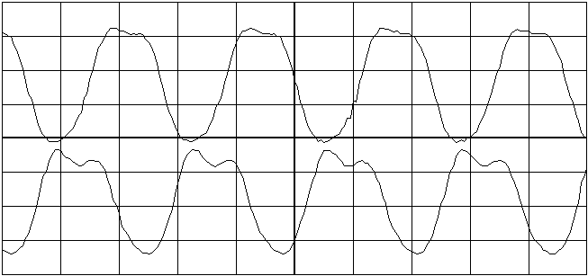

Previous
Next
TOC
Dieses Problem verstärkt sich dann erst recht, wenn der Bustakt von
32.084988MHz mit 31.25nS auf 36MHz mit 27.8nS, oder 40MHz mit 25ns
Zykluszeit (oder gar auf 48MHz mit knapp 21nS Zykluszeit mit dem
NEMESIS von Titan Designs U.K.) erhöht wird, hier muß man dann auch
darauf achten, daß die Phasenlage bei allen Bustakten (auch den
erhöhten) wieder übereinstimmt.
Ergänzende Informationen zum Thema Bus und CPU Takterhöhung beim
Falcon030
Die Spule L102, welche direkt hinter dem Ausgang vom Transistor Q107
sitzt dient der Glättung des 32.084988MHz Taktes, was folgendermaßen
dann aussieht.

Der 32.084988MHz Takt nach der Glättung durch die Spule L102
Der 32.084988MHz Takt vor der Glättung durch die Spule L102
Bei einigen Beschleunigermodulen (zum Beispiel dem PowerUp2 oder dem
Skunk32), die ausschließlich den CPU Takt von 16.042494MHz auf
32.084988MHz verdoppeln, kann es notwendig sein, daß das neue CPU
Taktsignal mittels einer Spule (ausgelötete Spule L102 und durch
einen Draht überbrückt) oder mehreren Ferritringen geglättet wird,
da sonst kein einwandfreier Betrieb möglich ist. Das Problem bei
diesen Beschleunigermodulen liegt darin, daß der Takt nur dann auf
32.084988MHz hochgeschaltet wird, wenn die CPU keine Buszugriffe
tätigt, also intern in ihrem Cache arbeitet. Dazu muß noch gesagt
werden das genau dieser Vorgang auftritt wenn der Videochip auf das
RAM zugreift, das heißt: Greift der Videochip mit 75 Zugriffen pro
Sekunde auf das RAM zu, weil die Bildwiederholfrequenz 75Hz beträgt,
hat die CPU innerhalb einer Sekunde 75mal die Finger vom RAM zu
lassen, in dieser Zeit wird die CPU also auf das doppelte hoch- und
wieder runtergetaktet. Ist diese Synchronisation nicht gegeben, kommt
es ebenfalls zu unmotivierten Bombenwürfen auf dem Bildschirm.
weiterblättern
Kapitel Der Clockpatch aus der ST-Computer Zeitschrift, Seite 8